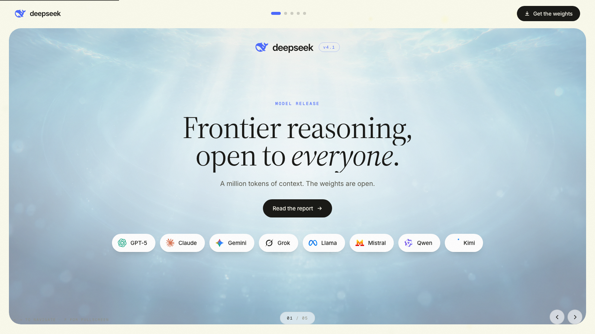

{kind=link}
{kind=link}
$50.00
 GPT-6 Astra
GPT-6 Astra FLASH
FLASH
The diagram describes the repository workflow: Astra briefs and reviews, while DeepSeek runs through the Codex CLI harness. Connected tools require configuration. It does not claim equal-quality savings.

Native visionImages and text, in the same model.
1 million output tokens
Compare Astra, Sol and DeepSeek ↓Input tokens also cost 50% less off-peak.
Release: 10 September 2026. The comparison uses the exact model names in DeepSeek’s model card: Opus-5.0, GPT-5.6 Sol, K3, GLM-5.3 and DeepSeek Flash. All instruct results are maximum reasoning. These vendor-published scores are separate from our High-setting tests. They do not establish a universal ranking. DeepSWE 74.2 versus Opus 74.0 is a near-tie. The Astra comparison appears in the following independent benchmark section.
The V4/V4.1 toggle changes only DeepSeek’s published score. The vision diagram is illustrative. Prices checked 13 September 2026: uncached input $0.30 peak / $0.15 off-peak and output $1.20 / $0.60 per million tokens. The cache architecture diagram has been replaced with the actual customer price difference. Official API prices ↗
AA rows: DeepSeek max. Astra, Sol and Grok xhigh. Our next DeepSeek tests use High. Snapshot: 12 September 2026.
 Proposed design workflow
Proposed design workflowThe illustration explains a proposed design handoff. Equal-quality savings have not been established. The linked design examples were supplied by Jack, and the DeepSeek file is served here so it opens from a browser. Original controlled tests ↗

Each model passed 17 accuracy checks, including two categorical checks. Synthetic data. Revenue and contribution follow the shared brief. ROAS is neither profit nor causal lift. Total task cost was not measured.

The illustration shows the existing Business design system being applied to the dashboard. DeepSeek worked on a separate branch. Four tabs were checked. Estimated DeepSeek inference: $0.096, excluding Astra supervision. Actual Business reference screenshot ↗
WHAT YOUR BUDGET BUYS
Benchmark attempts for a $10 budget.
8.6× lower average cost per attempt.
✓ Token use + reasoning includedAttempts, not guaranteed successful jobs.
4.3attemptsASTRA 6$2.31 / attempt8.5attemptsSOL 5.6$1.18 / attempt≈37attemptsDEEPSEEK$0.27 / attemptCalculated as $10 divided by Artificial Analysis weighted average cost per Intelligence Index task: Astra $2.31, Sol $1.18, DeepSeek $0.27. These are equivalent benchmark attempts, not successful real-world projects. AA includes actual input, cache, reasoning and answer-token usage and prices. DeepSeek uses 89K output tokens per weighted task versus Astra’s 17K in this comparison, so this cost measure already reflects token usage. It is not an equal-quality success-adjusted saving or the total cost of our hybrid workflow. Source ↗
USD per 1M output tokens
GPT-6 AstraGPT-5.6 SolDeepSeek V4.1Lower is cheaper · DeepSeek off-peak · Sol promotional API rate
Token price, not a measured saving on a finished task.
Checked 12 September 2026. DeepSeek peak: weekdays 01:00–04:00 and 06:00–10:00 UTC. Other hours are off-peak. Astra and Sol standard rates shown for prompts up to 272K tokens. Longer prompts cost 2× for input and 1.5× for output. Sol promotional pricing is listed through at least 21 November 2026. App subscriptions are separate. DeepSeek ↗ · Astra ↗ · Sol ↗
DeepSeek max. Astra, Sol and Grok xhigh. Snapshot: 12 September 2026. These are demanding benchmark conditions, not a measurement of every everyday task.